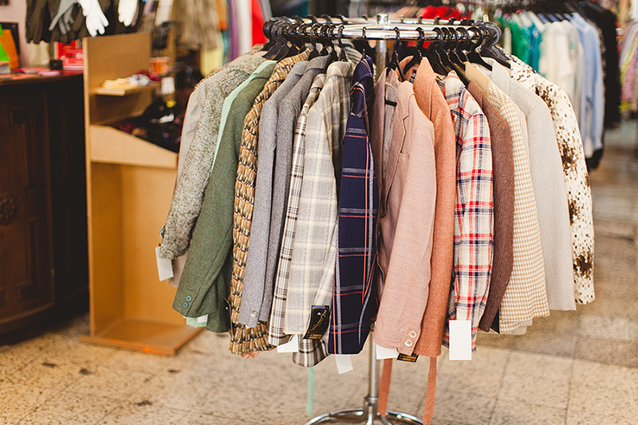

SEPTEMBER 22, 2016
R. Assunção 22, 1100-044 Lisboa
I’ve been to this vintage shop a few times, and whilst I’ve not ever taken anything home with me, it’s always worth a snoop as it’s so close to the main shopping streets. It also has a cafe, so works well as a spot to do a little shopping as well as grabbing a coffee. Read more ⟶